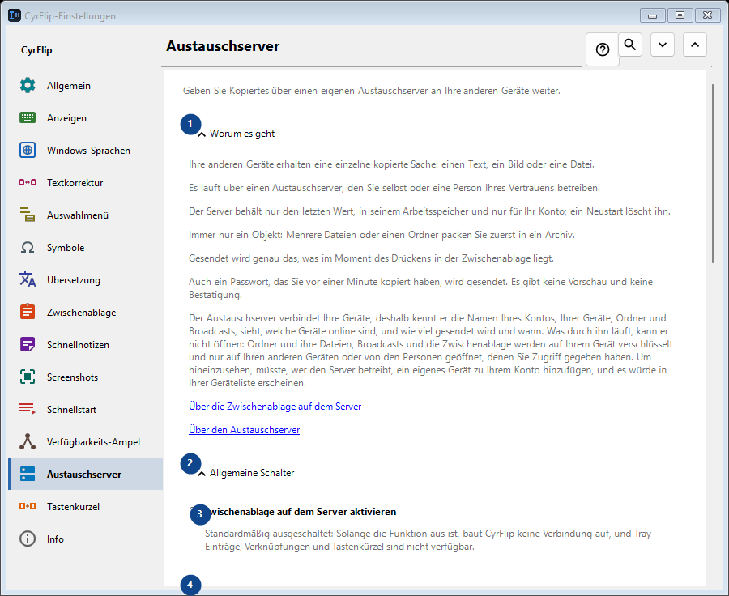
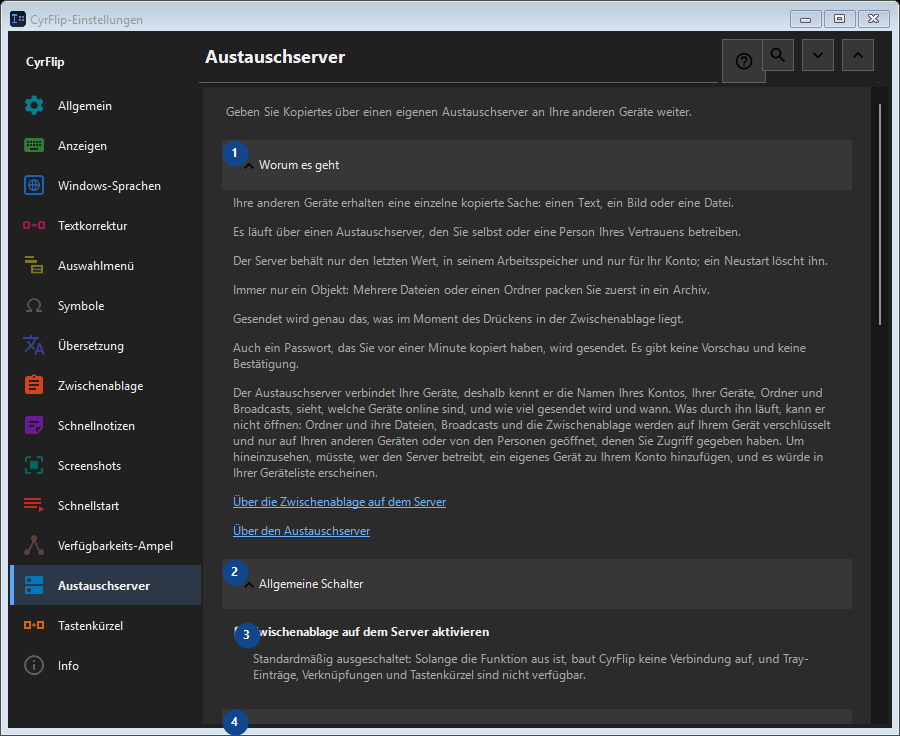

Austauschserver
Zweck
Geben Sie Kopiertes über einen eigenen Austauschserver an Ihre anderen Geräte weiter.


Reihenfolge
Einstellungen gelten sofort. Eine feste Reihenfolge ist nicht nötig; nutzen Sie die Gruppen unten.
Elemente
1. Worum es geht
Nutzen Sie diesen Befehl für die genannte Aktion. Lesen Sie eine Bestätigung, bevor Sie zustimmen.
Ihre Tastenkürzel2. Allgemeine Schalter
Nutzen Sie diesen Befehl für die genannte Aktion. Lesen Sie eine Bestätigung, bevor Sie zustimmen.
Ihre Tastenkürzel3. Zwischenablage auf dem Server aktivieren
Standardmäßig ausgeschaltet: Solange die Funktion aus ist, baut CyrFlip keine Verbindung auf, und Tray-Einträge, Verknüpfungen und Tastenkürzel sind nicht verfügbar.
Ihre Tastenkürzel4. Konten
Nutzen Sie diesen Befehl für die genannte Aktion. Lesen Sie eine Bestätigung, bevor Sie zustimmen.
Ihre Tastenkürzel5. Konto hinzufügen..
Nicht verfügbar, solange «Zwischenablage auf dem Server aktivieren» ausgeschaltet ist - schalten Sie zuerst diesen Schalter ein. Dieses Element ist derzeit nicht verfügbar. Aktivieren Sie zuerst die Funktion oder wählen Sie einen Eintrag.
Ihre Tastenkürzel6. Tastenkürzel und Verknüpfungen
Nutzen Sie diesen Befehl für die genannte Aktion. Lesen Sie eine Bestätigung, bevor Sie zustimmen.
Ihre Tastenkürzel7. Zwischenablage an den Server senden
Nicht verfügbar, solange «Zwischenablage auf dem Server aktivieren» ausgeschaltet ist - schalten Sie zuerst diesen Schalter ein. Dieses Element ist derzeit nicht verfügbar. Aktivieren Sie zuerst die Funktion oder wählen Sie einen Eintrag.
Ihre Tastenkürzel8. Ändern - Zwischenablage an den Server senden
Nicht verfügbar, solange «Zwischenablage auf dem Server aktivieren» ausgeschaltet ist - schalten Sie zuerst diesen Schalter ein. Dieses Element ist derzeit nicht verfügbar. Aktivieren Sie zuerst die Funktion oder wählen Sie einen Eintrag.
Ihre Tastenkürzel9. Zwischenablage vom Server abrufen
Nicht verfügbar, solange «Zwischenablage auf dem Server aktivieren» ausgeschaltet ist - schalten Sie zuerst diesen Schalter ein. Dieses Element ist derzeit nicht verfügbar. Aktivieren Sie zuerst die Funktion oder wählen Sie einen Eintrag.
Ihre Tastenkürzel10. Ändern - Zwischenablage vom Server abrufen
Nicht verfügbar, solange «Zwischenablage auf dem Server aktivieren» ausgeschaltet ist - schalten Sie zuerst diesen Schalter ein. Dieses Element ist derzeit nicht verfügbar. Aktivieren Sie zuerst die Funktion oder wählen Sie einen Eintrag.
Ihre Tastenkürzel11. „Senden“ auf dem Desktop ablegen
Nicht verfügbar, solange «Zwischenablage auf dem Server aktivieren» ausgeschaltet ist - schalten Sie zuerst diesen Schalter ein. Dieses Element ist derzeit nicht verfügbar. Aktivieren Sie zuerst die Funktion oder wählen Sie einen Eintrag.
Ihre Tastenkürzel12. „Abrufen“ auf dem Desktop ablegen
Nicht verfügbar, solange «Zwischenablage auf dem Server aktivieren» ausgeschaltet ist - schalten Sie zuerst diesen Schalter ein. Dieses Element ist derzeit nicht verfügbar. Aktivieren Sie zuerst die Funktion oder wählen Sie einen Eintrag.
Ihre Tastenkürzel13. Empfangene Dateien
Nutzen Sie diesen Befehl für die genannte Aktion. Lesen Sie eine Bestätigung, bevor Sie zustimmen.
Ihre Tastenkürzel14. Ordner für vom Server empfangene Dateien
Nicht verfügbar, solange «Zwischenablage auf dem Server aktivieren» ausgeschaltet ist - schalten Sie zuerst diesen Schalter ein. Dieses Element ist derzeit nicht verfügbar. Aktivieren Sie zuerst die Funktion oder wählen Sie einen Eintrag.
Ihre Tastenkürzel15. Auswählen - Ordner für vom Server empfangene Dateien
Nicht verfügbar, solange «Zwischenablage auf dem Server aktivieren» ausgeschaltet ist - schalten Sie zuerst diesen Schalter ein. Dieses Element ist derzeit nicht verfügbar. Aktivieren Sie zuerst die Funktion oder wählen Sie einen Eintrag.
Ihre Tastenkürzel16. Ordner öffnen - Ordner für vom Server empfangene Dateien
Nicht verfügbar, solange «Zwischenablage auf dem Server aktivieren» ausgeschaltet ist - schalten Sie zuerst diesen Schalter ein. Dieses Element ist derzeit nicht verfügbar. Aktivieren Sie zuerst die Funktion oder wählen Sie einen Eintrag.
Ihre Tastenkürzel